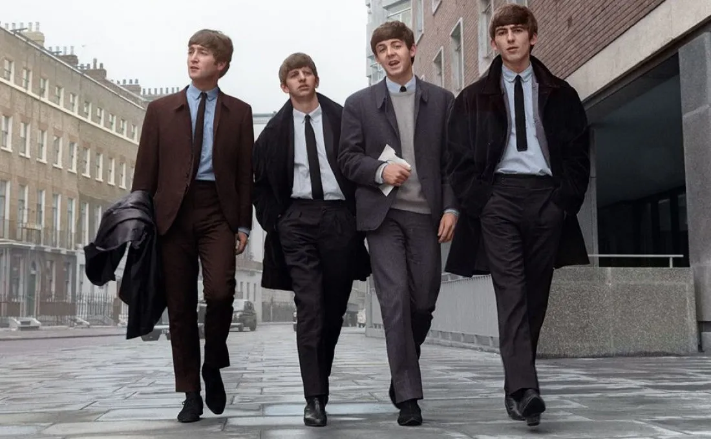
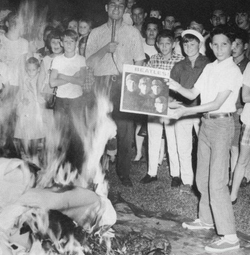
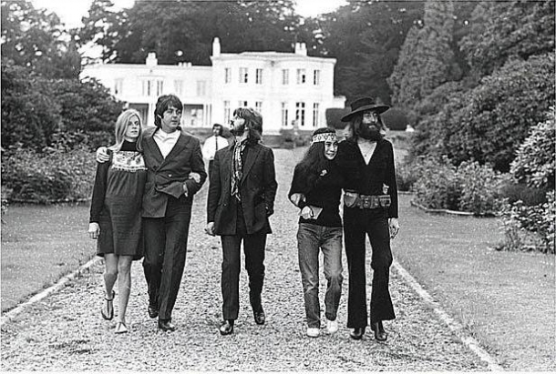

Από το 2001, με πρωτοβουλία της UNESCO, η 16η Ιανουαρίου γιορτάζεται
ως η Παγκόσμια Ημέρα των Beatles. Σαν σήμερα το 1957 έγιναν τα εγκαίνια
του The Cavern club στο Λίβερπουλ, στο οποίο οι τέσσερις έπαιξαν στα πρώτα
στάδια της δουλειάς τους, και εκεί η φήμη τους πήρε δυναμική.
Κανένα από τα μέλη του κουαρτέτου δεν γνώριζε μουσική σημειογραφία.
Λέγοντας ενδιαφέροντα στοιχεία για το γκρουπ Beatless, είναι απαραίτητο
να αναφέρουμε ποια άλλα ονόματα είχε αυτό το κουαρτέτο. Έτσι, το πρώτο όνομα είναι
Quarry Men. Στη συνέχεια δοκιμάστηκαν τίτλοι όπως τα British Everly Brothers,
Moondogs και The Rainbows. Αλλά ως αποτέλεσμα, η ομάδα εγκαταστάθηκε στους Beatles.
Το 1966, σε μια συνέντευξη, ο Τζον Λένον εξέφρασε τη σκανδαλώδη ιδέα ότι
οι Beatles γίνονταν πιο δημοφιλείς από τον Ιησού Χριστό. Αυτό, φυσικά, προκάλεσε
αγανάκτηση στους πιστούς και σε ορισμένες χώρες υπήρξαν διαμαρτυρίες κατά του
συγκροτήματος με το κάψιμο των δίσκων τους. Μόνο το 2010, το Βατικανό συγχώρεσε
τον Lenon και ο ίδιος έπρεπε να ζητήσει συγγνώμη λίγο αργότερα από τους προσβεβλημένους πιστούς.



Στη θεία του Τζον Λένον άρεσε πάντα να επαναλαμβάνει τη φράση:
Η κιθάρα είναι καλό όργανο. Ωστόσο, δεν είναι κατάλληλο για να κερδίσετε χρήματα.
Και, καθώς έγινε εξαιρετικά πλούσιος, ο Τζον αγόρασε στη θεία του μια βίλα που
είχε έναν μαρμάρινο τοίχο με το αγαπημένο της απόφθεγμα.
Για το πρώτο τους άλμπουμ, οι Beatles έλαβαν 29 £ ο καθένας.
Την εποχή που μπήκε στην ομάδα, ο Τζορτζ Χάρισον ήταν μόλις 16 ετών.
Το 1961, κατά τη διάρκεια της δεύτερης περιοδείας του συγκροτήματος στο Αμβούργο,
ο Stuart Sutcliffe ερωτεύτηκε μια νεαρή καλλιτέχνιδα και φωτογράφο, την Astrid Kirchherr.
Ήταν αυτή που σκέφτηκε τα θρυλικά κουρέματα των Beatle και πρότεινε στους άντρες
να φορέσουν σακάκια τύπου Pierre Cardin αντί για ξεφτισμένα δερμάτινα μπουφάν - χωρίς γιακά.
Έκανε επίσης την πρώτη επαγγελματική φωτογράφιση των Beatles σε μια νέα εικόνα.
Ο Σάτκλιφ πήρε την απόφαση να φύγει από το γκρουπ και να μείνει στο Αμβούργο με την Άστριντ.